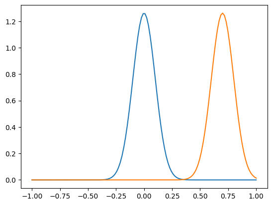
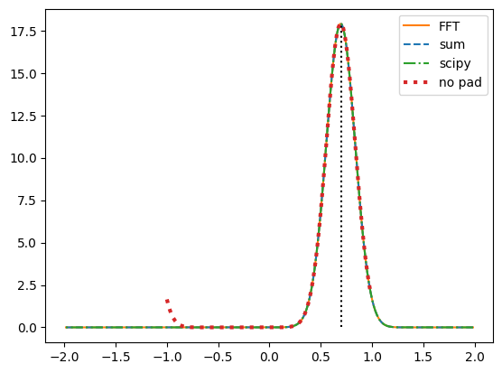
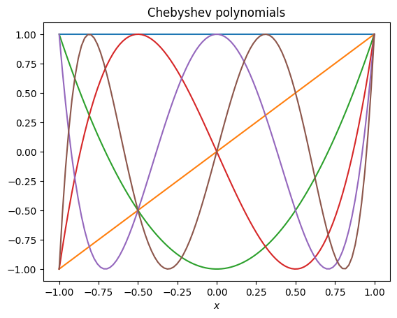
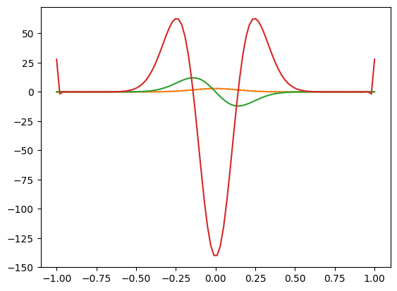
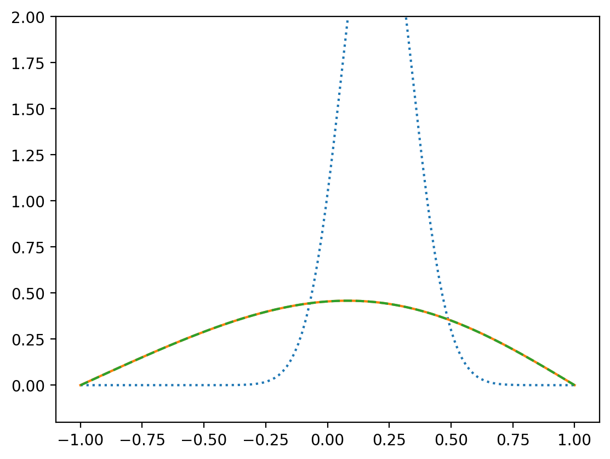
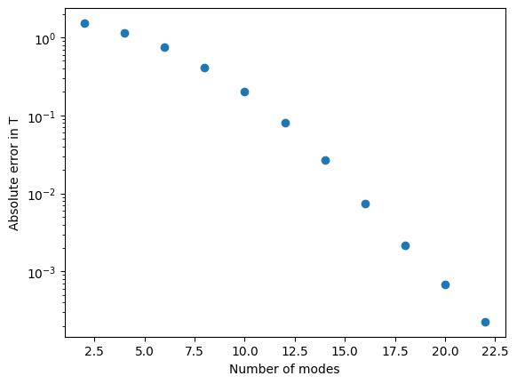

Homework 7 solutions#
Cross-correlation function#
import numpy as np
import matplotlib.pyplot as plt
import scipy.signal
---------------------------------------------------------------------------
ModuleNotFoundError Traceback (most recent call last)
Cell In[1], line 1
----> 1 import numpy as np
2 import matplotlib.pyplot as plt
3 import scipy.signal
ModuleNotFoundError: No module named 'numpy'
def corr_sum(f, g):
# note we're assuming f and g have the same length
n = len(f)
corr = np.zeros(2*n-1)
for j in range(-(n-1),n):
for i in range(n):
if (i+j)>=0 and (i+j)<n:
corr[j] += f[i] * g[i+j]
# shift so that zero offset is in the center
return np.roll(corr, n-1)
def corr_fft(f, g, pad = True):
if pad:
n = len(f) + len(g) - 1
else:
n = len(f)
ff = np.fft.fft(f, n)
gg = np.fft.fft(g, n)
corr = np.fft.ifft(np.conj(ff) * gg)
return np.fft.fftshift(corr)
def gaussian(x, x0, s):
return np.exp(-0.5*(x-x0)**2/s**2) / np.sqrt(2*np.pi*s)
n = 128
xshift = 0.7
x = np.linspace(-1,1,n, endpoint=True)
f = gaussian(x, 0, 0.1)
g = gaussian(x, xshift, 0.1)
plt.plot(x,f)
plt.plot(x,g)
plt.show()
corr1 = corr_sum(f,g)
corr2 = corr_fft(f,g)
y = 2*np.arange(-(n-1),n)/n
plt.plot(y, corr2, "C1", label='FFT')
plt.plot(y, corr1, "C0--", label='sum')
corr4 = scipy.signal.correlate(f,g)
y4 = -2*scipy.signal.correlation_lags(n,n)/n
plt.plot(y4, corr4, "C2-.", label='scipy')
corr3 = corr_fft(f,g, pad = False)
y3 = 2*np.arange(-(n-1)//2,n//2)/n
plt.plot(y3, corr3, "C3:", lw = 3, label='no pad')
plt.plot((xshift, xshift), (0,max(corr1)), "k:")
plt.legend()
plt.show()

/opt/homebrew/lib/python3.11/site-packages/matplotlib/cbook/__init__.py:1335: ComplexWarning: Casting complex values to real discards the imaginary part
return np.asarray(x, float)

We can see that for large shifts, the correlation function wraps around without zero-padding.
Chebyshev polynomials#
import numpy as np
import matplotlib.pyplot as plt
import scipy.special
First remind ourselves what the Chebyshev polynomials look like. Notice that they are always in the range -1 to 1 and that the value at boundaries is either -1 or 1 (left) or 0 (right).
# Plot the Chebyshev polynomials
# from https://andrewcumming.github.io/phys512/polynomial_fit.html#orthogonal-polynomials
def plot_poly(poly_generator, title, num):
for i in range(num):
x = np.linspace(-1,1,100)
a = np.zeros(num)
a[i] = 1
poly = poly_generator(a)
plt.plot(x, poly(x))
plt.xlabel(r'$x$')
plt.title(title)
plt.show()
plot_poly(np.polynomial.chebyshev.Chebyshev, 'Chebyshev polynomials', 6)

The method of images gives us the Green’s function for zero boundary conditions:
def gaussian(x, x0, t, D):
# Green's function for the diffusion equation
return np.exp(-(x-x0)**2/(4*D*t)) / np.sqrt(4*np.pi*D*t)
def greens(x, x0, t, D):
# Green's function for the diffusion equation with zero boundary conditions at x=-1,+1
T = gaussian(x, x0, t, D)
T -= gaussian(x, -1-(1+x0), t, D)
T -= gaussian(x, 1+(1-x0), t, D)
return T
First let’s try the Chebyshev decomposition and differentiation and make sure we get a sensible result when we transform back to real space:
# Try out the Chebyshev fit and the derivatives
n = 100
x = np.linspace(-1,1,n)
T = gaussian(x, 0.0, 0.01, 1)
#T = np.ones(n)
#T[-1] = 0
a = np.polynomial.chebyshev.chebfit(x, T, 32)
print(a)
poly = np.polynomial.chebyshev.Chebyshev(a)
plt.plot(x,T,":")
plt.plot(x, poly(x))
poly1 = np.polynomial.chebyshev.Chebyshev(np.polynomial.chebyshev.chebder(a, m=1))
plt.plot(x, poly1(x))
poly2 = np.polynomial.chebyshev.Chebyshev(np.polynomial.chebyshev.chebder(a, m=2))
plt.plot(x, poly2(x))
[ 3.21634303e-01 3.04612521e-16 -6.17036388e-01 1.51900984e-16
5.44550282e-01 1.79622270e-16 -4.42766020e-01 2.73721499e-17
3.32042248e-01 -8.33382671e-19 -2.30235965e-01 1.22382885e-17
1.47877341e-01 1.78431730e-17 -8.82518459e-02 -6.10994081e-17
4.90522046e-02 -4.38790477e-17 -2.54558134e-02 2.59230570e-17
1.23950231e-02 6.10386467e-17 -5.63610550e-03 5.91426442e-17
2.45122152e-03 -3.75660917e-18 -9.65058066e-04 -4.25271377e-17
3.99797344e-04 -5.09700808e-17 -1.18962306e-04 -1.80915014e-17
6.38950189e-05]
[<matplotlib.lines.Line2D at 0x128282250>]

Now we can do the time-dependent evolution
# Time evolution
def evolve(x, T, n_mode, t0, tend, dt, output = True):
# boundary conditions
# T=1 on the left and 0 on the right (as in HW5)
#b1 = 0.5
#b2 = -0.5
# zero on each side
b1 = 0
b2 = 0
# we need an even number of modes
if n_mode%2:
n_mode += 1
a = np.polynomial.chebyshev.chebfit(x, T, n_mode)
a[-1] = b1-np.sum(a[:-1:2])
a[-2] = b2-np.sum(a[1:-2:2])
niter = int((tend-t0)/dt)
dt = (tend-t0)/niter
poly = np.polynomial.chebyshev.Chebyshev(a)
print('dt*n_mode^2 = ', dt*(2*np.pi*n_mode)**2, 'niter =', niter)
if output:
%matplotlib
print('starting bcs:', poly(-1), poly(1))
fig, ax = plt.subplots()
plt_handle1, = plt.plot(x, T,":")
plt_handle2, = plt.plot(x, poly(x))
plt.ylim((-0.2,1.2))
for i in range(niter):
# time-update
da = dt * np.polynomial.chebyshev.chebder(a, m=2)
a[:-2] = a[:-2] + da
# kill off the modes with very low amplitudes, helps to avoid roundoff causing boundary problems
a[np.abs(a)/np.max(np.abs(a))<1e-10] = 0
# set the amplitude of the last mode to enforce zero boundary condition
a[-1] = b1-np.sum(a[:-2:2])
a[-2] = b2-np.sum(a[1:-2:2])
t = t0 + (i+1)*dt
if output:
if (i % int(niter/100) == 0) or i == niter-1:
poly = np.polynomial.chebyshev.Chebyshev(a)
#print(i, poly(-1), poly(1))
plt_handle1.set_ydata(greens(x, x0, t, 1))
plt_handle2.set_ydata(poly(x))
ax.set_title('t=%lg' % (t0 + (i+1)*dt,))
plt.draw()
plt.pause(1e-3)
if output:
%matplotlib inline
print('Final t=',t,' tend=',tend)
print('Final a values = ', a)
# send back the result in real space
poly = np.polynomial.chebyshev.Chebyshev(a)
return poly(x)
# initial condition
n = 128
x = np.linspace(-1,1,n, endpoint=True)
dx = x[1]-x[0]
t0 = 0.01
x0 = 0.2
Tinit = greens(x, x0, t0, 1)
#T = np.ones(n)
tend = 30*t0
T = evolve(x, Tinit, 12, t0, tend, 6e-6)
plt.clf()
plt.plot(x, Tinit, ':')
plt.plot(x, T)
plt.plot(x, greens(x, x0, tend, 1),"--")
plt.ylim((-0.2,2))
plt.show()
print("max error = ", np.max(np.abs(T - greens(x, x0, tend, 1))))
dt*n_mode^2 = 0.034109588048703086 niter = 48333
Using matplotlib backend: MacOSX
starting bcs: -5.551115123125783e-17 -5.551115123125783e-17
Final t= 0.3 tend= 0.3
Final a values = [ 2.13941343e-01 1.73249377e-02 -2.26792749e-01 -2.03018468e-02
1.32560668e-02 3.17948846e-03 -4.25144160e-04 -2.10367497e-04
2.17486973e-05 7.99352180e-06 -1.32082849e-06 -2.05437733e-07
5.47629716e-08]

max error = 0.0007489344801900435
Check the scaling with timestep:
# initial condition
n = 128
print('n=',n)
x = np.linspace(-1,1,n, endpoint=True)
dx = x[1]-x[0]
t0 = 0.01
x0 = 0.2
Tinit = greens(x, x0, t0, 1)
tend = 2*t0
n_vals = np.linspace(2,22,11)
err_vals = np.array([])
for nmodes in n_vals:
T = evolve(x, Tinit, int(nmodes), t0, tend, 3e-6, output=False)
err = np.max(np.abs(T - greens(x, x0, tend, 1)))
print(nmodes, err)
err_vals = np.append(err_vals, err)
plt.plot(n_vals, err_vals, 'o')
#plt.xscale('log')
plt.yscale('log')
plt.ylabel('Absolute error in T')
plt.xlabel('Number of modes')
plt.show()
n= 128
dt*n_mode^2 = 0.00047378839009129835 niter = 3333
2.0 1.5275099289619556
dt*n_mode^2 = 0.0018951535603651934 niter = 3333
4.0 1.137742350609602
dt*n_mode^2 = 0.004264095510821685 niter = 3333
6.0 0.748354697594884
dt*n_mode^2 = 0.0075806142414607735 niter = 3333
8.0 0.4152737654376424
dt*n_mode^2 = 0.011844709752282459 niter = 3333
10.0 0.20104921182692692
dt*n_mode^2 = 0.01705638204328674 niter = 3333
12.0 0.0802876975680904
dt*n_mode^2 = 0.02321563111447362 niter = 3333
14.0 0.026531326123637733
dt*n_mode^2 = 0.030322456965843094 niter = 3333
16.0 0.007461368828320714
dt*n_mode^2 = 0.03837685959739517 niter = 3333
18.0 0.002141763540977726
dt*n_mode^2 = 0.047378839009129835 niter = 3333
20.0 0.0006747037903047648
dt*n_mode^2 = 0.057328395201047086 niter = 3333
22.0 0.00022713786231176591

Spectral methods usually give exponential convergence with the number of modes. The convergence is faster than the \(1/N^2\) you might expect for a second order finite difference.